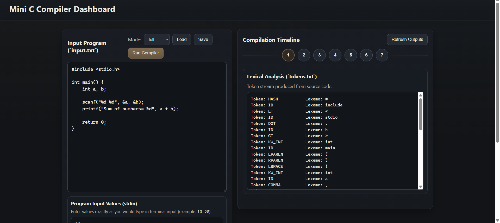
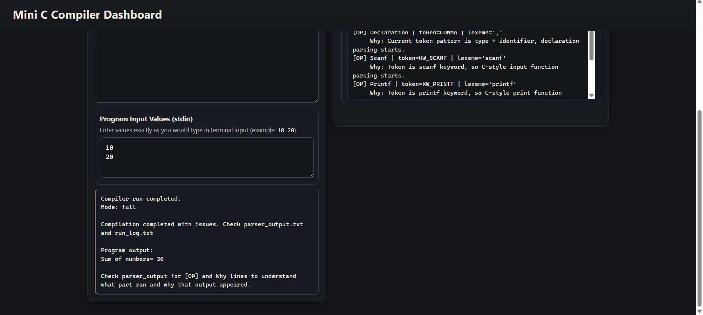
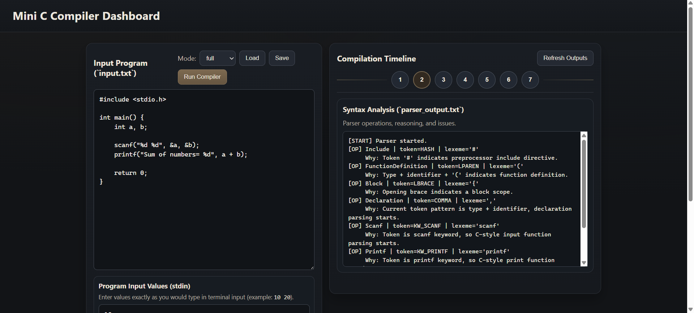
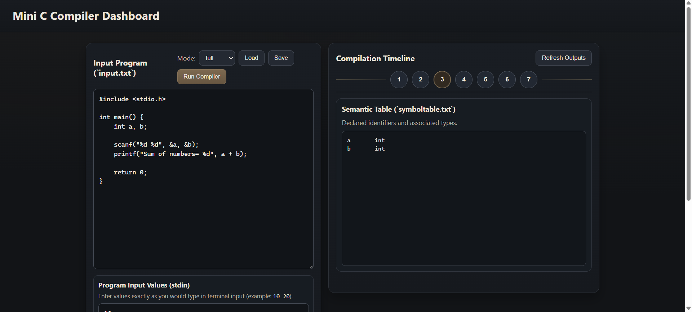
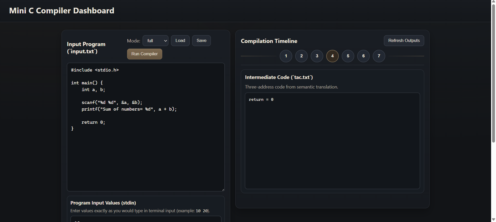
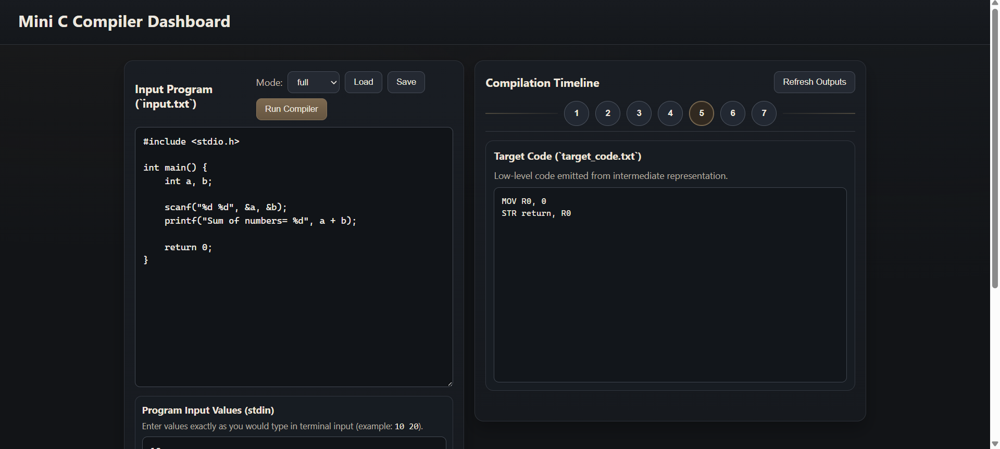
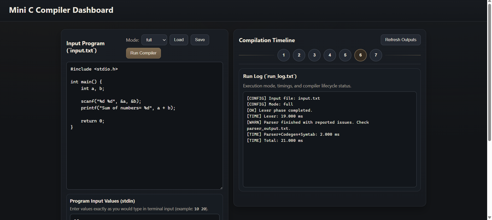
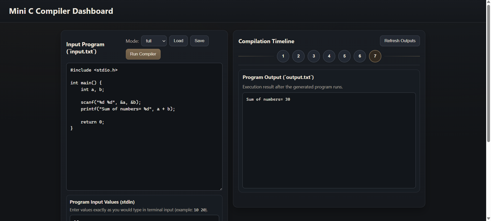

A hand-built compiler pipeline that processes C source code through lexical analysis, parsing, symbol table management, and intermediate code generation — with structured error reporting at every phase.
Compilers are one of the most complex pieces of software in existence — translating human-readable source code into machine instructions through multiple precise phases. This project aims to build a stripped-down but fully functional compiler for a subset of C, demonstrating each phase from tokenization through to intermediate code generation, to deepen understanding of how modern compilers work under the hood.
The source file is read character-by-character by the lexer, which emits a stream of classified tokens. The parser consumes that stream, validating it against the grammar using recursive descent. As declarations are encountered, the symbol table is updated. Once parsing succeeds, the code generator walks the syntax tree to emit three-address instructions. Any violation at any stage produces a descriptive error pointing back to the offending line.







